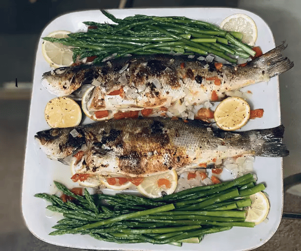

Home
Branzino Mediterranean

Description
Branzino, also known as European sea bass,
is a delicious white fish with a mild flavor. I like to cook them whole,
stuffed with lemon wedges, fresh oregano, and rosemary before roasting them
for an easy dinner full of Greek flavor.
Ingredients
- 2 tablespoons olive oil, divided
- red onion, chopped
- salt and ground black pepper to taste
- whole Branzino (sea bass) fish, cleaned
- 4 lemon wedges, divided
- 2 sprigs fresh rosemary
- ½ cup white wine
- ¼ cup lemon juice
- 1 tablespoon fresh oregano leaves
- ¼ cup chopped Italian flat-leaf parsley